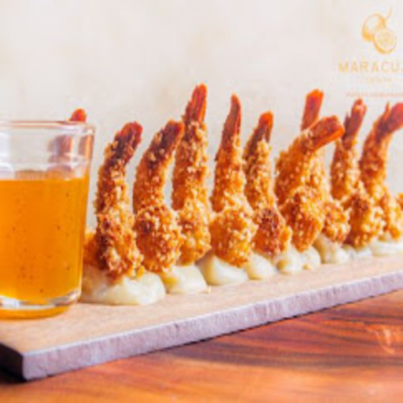
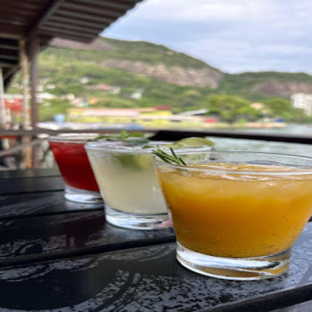
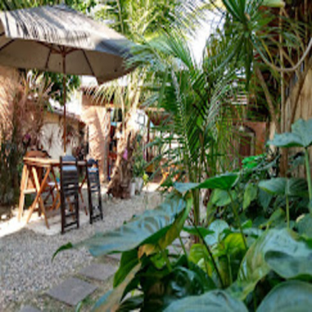
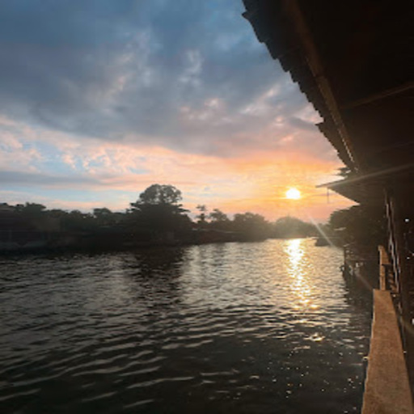
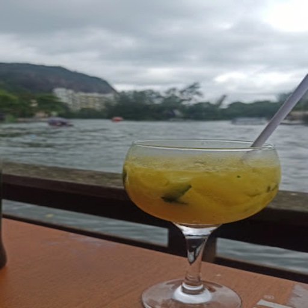
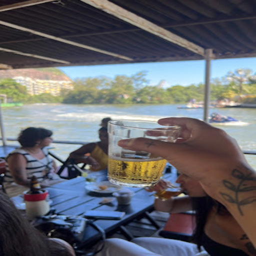
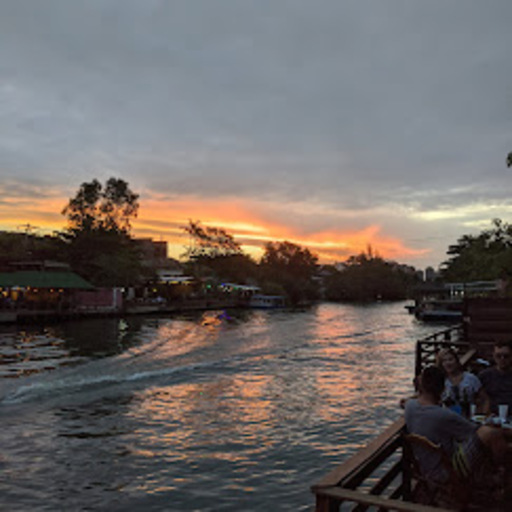

Maracujá da Ilha
Gastronomia, natureza e o clima perfeito na Ilha Primeira.

📸 Conheça o Espaço








O Maracujá da Ilha é um dos restaurantes mais conhecidos do complexo lagunar, localizado na charmosa Ilha Primeira. Localizado às margens da lagoa, o restaurante oferece um ambiente descontraído e agradável, perfeito para quem quer aproveitar a gastronomia cercado pela natureza.
O cardápio combina frutos do mar, petiscos e pratos variados, sendo uma parada estratégica para quem chega de barco.
🍤 Destaques da Casa
- Camarão Empanado: Crocante por fora e suculento por dentro. É um dos grandes sucessos da casa e favorito entre os clientes.
- Ceviche Tradicional: Servido com chips de aipim crocantes, traz uma combinação refrescante de sabores.
Além da gastronomia, o ambiente aberto e a vista para a lagoa tornam o Maracujá da Ilha o lugar ideal para almoçar, petiscar e tomar um drink aproveitando a brisa do Rio.